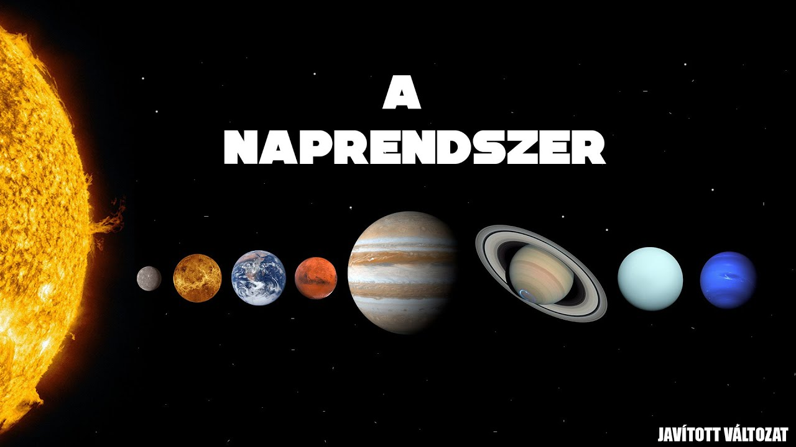

Ismerd meg bolygószomszédainkat!

A Naprendszer középpontjában a Nap található. Körülötte nyolc bolygó kering. Ezek különböznek egymástól méretükben, hőmérsékletükben és összetételükben. A Föld a harmadik bolygó a Naptól számítva.
A nyolc bolygó sorrendje
- Merkúr – a Naphoz legközelebbi bolygó
- Vénusz – nagyon forró bolygó
- Föld – az otthonunk
- Mars – a vörös bolygó
- Jupiter – a Naprendszer legnagyobb bolygója
- Szaturnusz – híres a gyűrűiről
- Uránusz – jégóriás, különleges tengelyferdeséggel
- Neptunusz – a Naptól legtávolabbi bolygó